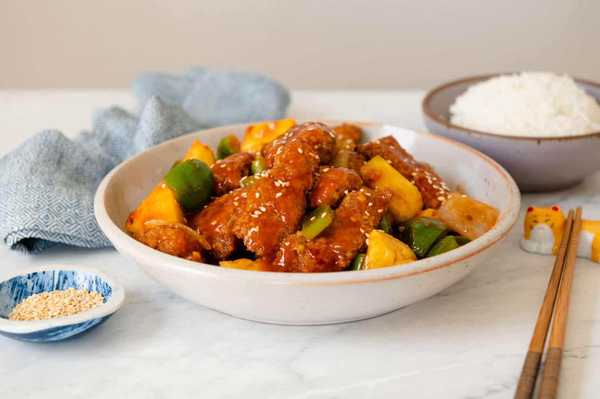

Sweet Sour Pork

Description
The recipe yields two large dinner-size bowls or four smaller ones.
Ingredients
- Pork-the best cut (in order of preference):
pork scotch (aka pork neck, pork collar), pork shoulder, leg, tenderloin then loin.
- Baking soda (aka bi-carb) and cornflour/cornstarch>
meat tenderising method widely used across Asia (notably in Chinese cooking) that is starting to be discovered by Western countries!
- Garlic, ginger and onion>Grated to make them “juicy” so the flavour penetrates better
- Soy sauce > - for seasoning and flavour
How to make Sweet and Sour Pork - OVERVIEW
-
Marinate porkto infuse with flavour and tenderise the meat (we are using economical shoulder and scotch pork);
-
Double dredgein cornflour/cornstarch, not flour, for extra crispy;
-
Double fry>for extra crispy a trick Asians have been using for centuries;
-
10 second toss>to coat pork in Sweet and Sour Sauce!